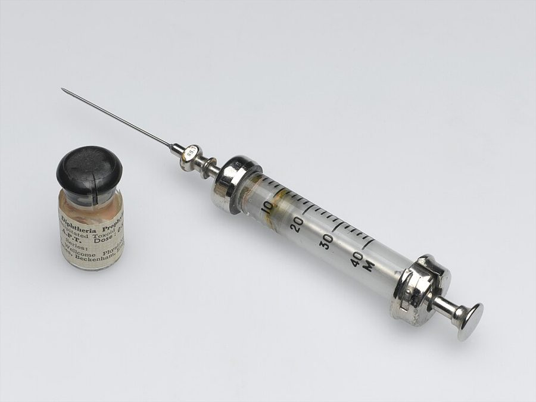

紧接上一章的最后一秒，还在 Miles 家的客厅，从夜里一直到第二天。Dan 没有昏过去：他听得见、看得见，却做不了自己的主，所以整章是他在「旁听」Belle 和 Miles 说话。
前面有一段猫的戏，几乎全是动作和声音；中间和后面是那两个人对着 Dan 带来的文件商量，行话集中在支票、合同和股票上。
抓两样：这两个人里谁拿主意；Dan 被问话时为什么答得那么怪。

二十世纪中叶的玻璃注射器，那时针筒是煮过了反复用的。上一章停在一针上，这一章从这一针的药劲写起。
Wellcome Collection，CC BY 4.0，维基共享资源（博物馆藏品，瓶里是疫苗，与本书无关）
人物
都是虚构的人。这里只写到上一章结束时你已经知道的。
Dan Davis叙述者「我」上一章闯进 Miles 家摊牌，句句往痛处戳，最后挨了 Belle 一针。这一章他人在场，但说不上话。
纸质股票的背面印着一栏转让表格，持有人填上受让人、签了名，这张股票就归了别人，道理和背书一样。assign 在这里只有这一个意思：把权利转给别人，不是「分配任务」。
转让也可以另写一张纸，和股票放在一起（第二章里 Dan 用的就是这个办法）。in trust for 是「由……代某人保管」：名义上归受托人，好处归那个人。
X’s answer to Y：X 这边拿得出手、和 Y 对等的东西。Uncle Sam 是美国政府。
whip up
… but the boys whipped it up in …
三两下弄出来
本来说快手做一顿饭。the boys 指军方搞研究的那帮人。
lay hands on
… where Belle laid hands on it. …
弄到手
laid 是 lay 的过去式。God knows 是「天晓得」。
have someone on the string
… suckers she had on the string. …
手里牵着（好几个冤大头）
像牵线木偶一样吊着某人。sucker 第一章见过。
passive as a vegetable
… there, passive as a vegetable, hearing …
像棵菜一样没反应
vegetable 后来成了「植物人」的口语说法。
without her horse
… strolled through without her horse I …
连马都没骑（光着身子走过去）
见上面「背景」。stroll 是溜达。
strop
… he started stropping my shins vigorously …
来回蹭
strop 是磨剃刀的皮带，剃刀在上面来回荡。猫蹭腿就是这个动作。shin 是小腿正面。
and no nonsense
… right now and no nonsense. …
别跟我打马虎眼
Dan 照例把猫叫翻译成人话。
Now you’ve done it!
… bitterly, “Now you’ve done it! Have …
这下你闯祸了！
固定说法，不是「你做到了」。
keep your nerve
… answered, “Keep your nerve, Chubby. We’re …
沉住气
nerve 是胆量、镇定。lose one’s nerve 是慌了。
Chubby
… your nerve, Chubby. We’re going to …
小胖
Belle 对 Miles 的称呼，这一章才出现。chubby 是圆滚滚的，叫丈夫这个不算客气。
settle him once and for all
… to settle him once and for all.” …
把他彻底解决掉
settle 是了结；once and for all 是一劳永逸。Miles 马上往最坏处理解了。
Stuff it!
… “Stuff it! That would be the …
闭嘴吧你！
粗话。
have the guts for
… you don’t have the guts for it. …
有胆子干
guts 本义是肠子。
He’s our boy now
… “He’s our boy now. He’ll do …
他现在归我们使唤了
our boy：自己人，听话的人。
doped up
… can’t keep him doped up forever. Once …
用药迷着
dope 是毒品、麻药。
come out of it
… Once he comes out of it—” …
药劲过去，缓过来
quit doing
… “Quit talking like a lawyer. I …
别再……
美国口语里 quit 常当 stop 用。Miles 确实是律师。
stick one’s nose into
… to quit sticking his nose into our …
插手、多管（别人的事）
Timbuktu
… him to go to Timbuktu; he’ll …
廷巴克图：天涯海角
西非马里的一座城。英语里拿它代指远得不能再远的地方。
just the same
… he’ll do it just the same.” …
照样（会做）
不是「完全一样」。
Skip it
… “Skip it, skip it. This stuff …
算了，当我没说
场景 2 It was then that Pete …
keen
… left to do but keen. …
拖长声音恸哭
动词。和形容词 keen（热衷、敏锐）是两个词，见「背景」。
put one in mind of
… It puts one in mind of a …
让人想起
略旧的说法，等于 remind one of。
nerve-racking
… it hits a nerve-racking frequency. …
折磨神经的
rack 是拷问用的刑架。工程师写猫叫，落在「频率」上。
confounded
… said, “That confounded cat! We’ve got …
该死的
比 damned 文雅一档的骂法。Miles 用这个，Belle 用 damned。
raise Cain
… Dan would raise more Cain about …
大闹一场
Cain 是《圣经》里杀了弟弟的该隐。raise Cain：闹得天翻地覆。
strip someone completely
… if we had stripped him completely. Here—” …
把某人的东西拿个精光
strip 是剥。说的是财产。
poker
… a poker from the fireplace set; …
拨火棍
不是扑克。fireplace set 是壁炉边那套铁器：拨火棍、铲子、夹子、刷子。
“Tried” is the word
… “Tried” is the word. Pete isn’t …
「想要」两个字用得准
… is the word：这个词才贴切。意思是没成。
isn’t anxious to
… Pete isn’t anxious to be picked …
可不怎么乐意
anxious to 是「急着想」，不是焦虑。往轻里说的反话。
touchy as mercury fulminate
… as touchy as mercury fulminate. But …
像雷汞一样碰不得
touchy：一碰就炸，也指人敏感易怒。
by the scruff of the neck
… by the scruff of the neck. …
揪着后颈皮
Pete got him
… Pete got him with claws in …
Pete 抓中了他
get 是「击中」，第一章 they got Washington 同一个用法。
Stand clear
… shrilled, “Stand clear, Chubby!” and swung …
闪开！
clear 是「不挡着」。shrill 作动词：尖声叫。
forthright
… intentions were sufficiently forthright and she …
直截了当
故意文绉绉：她的「意图」够明确了。
roundhouse swipe
… ducked under that roundhouse swipe and …
抡圆了的一下
拳击术语，见「背景」。duck 是猛一低头躲开。
double back
… when they doubled back across my …
原路折回来
cone of vision
… back across my cone of vision, two …
视野（那个圆锥）
工程师的说法，前面还有 outside that angle。
lay a glove on
… they ever laid a glove on him. …
碰到（对手）一下
拳击里说拳套连对手的边都没沾上。
finest hour
… in Pete’s finest hour, his greatest …
最光辉的时刻
丘吉尔 1940 年演讲里的名句 This was their finest hour。拿来说一只猫。
Moment of Truth
… at his supreme Moment of Truth I …
见真章的那一刻
斗牛术语：斗牛士最后刺出那一剑的瞬间。大写是 Dan 在郑重其事。
conjure up
… it now and conjure up emotion I …
凭空唤起
conjure 是变戏法、念咒召唤。
narcolept
… deprived, like a narcolept on a …
嗜睡症患者
narcolepsy：说睡着就睡着的病。deprived 是「被剥夺了」。
censorable
… “Who left that censorable screen …
（此处脏话略去）
Belle 说的是句脏话，Dan 转述时换成了「该删的」。1950 年代的小说不印脏字，这是绕过去的办法。
screen door
… left that censorable screen door unhooked?” …
纱门
美国住宅正门外面另装的一扇纱网门，里面用小钩子扣住。unhooked：钩子没挂。
did them no good
… face and did them no good. At …
越擦越糟
do … no good：对……没好处。
I will like hell
… “I will like hell shut up. Have …
我才不（闭嘴）呢
like hell 插在句子里表示强烈否定，字面却是肯定句。
get at
… where Pete could get at it—legs, bare …
够得着
harpy
… She looked like a harpy after a …
鸟身女妖；泼妇
希腊神话里长着女人脸的怪鸟，姐妹好几个，所以后面说 with her sisters。
no-holds-barred row
… after a no-holds-barred row with her …
什么手段都用上的一场恶斗
row 读如 now，是吵架、打架，不是「一排」。第二章见过。
be well rid of
… that cat; we’re well rid of it.” …
甩掉了正好
rid of：摆脱。well 是「幸好」。
in spades
… “You too,” he answered, “in spades. …
加倍（奉还）
桥牌里黑桃是最大的花色。Belle 骂了一句，他回：你也一样，还得翻倍。
on our hands
… that with him on our hands?” He …
（这么个人）还砸在我们手里
have … on one’s hands：摊上了、甩不掉。
There ought to be a law
… “There ought to be a law against …
真该立条法律管管
美国人发牢骚的口头禅。说这话的人此刻自己并不清白。
prowl
… hear Pete prowling around the house. …
（猛兽）来回巡行
choose weapons
… them to choose weapons and come …
挑武器吧（下战书）
决斗的规矩：被挑战的一方选武器。singly or in bunches：单挑还是一起上。
Have it your own way
… “Have it your own way.” Miles …
随你怎么说吧
不想再争时说的。
场景 3 Belle came back first. Her …
Band-Aid
… Except for Band-Aid strips on her …
创可贴
强生公司 1920 年代起卖的牌子，成了通称。
phiz
… grim look on her phiz I …
脸
physiognomy（相貌）的缩略，老俚语，现在没人说了。grim 是阴沉。
go through someone
… She went through me quickly and …
把某人身上搜一遍
go through 是「从头到尾翻查」。expertly：手法老练。
watch pocket
… not forgetting watch pocket, shirt pockets, …
表袋
裤腰下面放怀表的小口袋。牛仔裤右前袋里那个小袋就是它。
the take
… not have. The take was not …
到手的东西
名词：抢来、赢来的那一笔。Dan 用的是说贼的词。
small change
… and such, keys, small change, a …
零钱
change 是找零的硬币。
closed endorsement
… read the closed endorsement I had …
写明了收款方的背书
见上面的行话。
a slug of
… Dan? Buying a slug of insurance?” …
一大笔
slug 本来是一大口（酒）。和「鼻涕虫」无关。
flap
… recalled the flap in it I …
（包上带盖的）夹层
第一章结尾 Dan 把文件塞进去的地方。
tailor’s dummy
… me, a tailor’s dummy waiting to …
裁缝店的人台
dummy：假人。也骂人呆。
fourth-rate middleweight
… like a fourth-rate middleweight whose manager …
四流的中量级拳手
见「背景」。outmatched：对手比他强太多。
fore and aft
… scalp lock, fore and aft on his …
从前到后
船上的说法（船头到船尾）。scalp lock 是一些印第安战士剃光头后在头顶留的那一绺头发。
get to him
… Pete must have got to him while …
够着了他
while he was down：趁他倒在地上的时候。
be through with
… papers she was through with. He …
看完了的
through 是「完事了」。
put a different complexion on
… “This puts a different complexion on …
让事情换了一副面貌
complexion 本义是脸色、气色。
understatement
… “An understatement. This commitment order …
说得太轻了
hot as noon in Mojave
… as hot as noon in Mojave; we’ve …
烫手得很
hot 双关：烫；也是黑话里「正被人找、沾不得」的人或赃物。莫哈韦沙漠的正午是他们工厂所在地的天气。
get chicken
… you always get chicken when the …
怂了
chicken 是胆小鬼。when the pressure is on：一到要紧关头。
a break
… on. This is a break, maybe …
一次好运气
break 作名词：转机、机会。a lucky break。
How do you figure?
… “How do you figure?” …
这话怎么讲？
figure 是「推断」。这本书里 figure 的第三个意思。
load him up with
… and load him up with what …
往他脑子里装满（指令）
dose 作动词：给……下药。
amount to
… is what this amounts to—may conflict, …
实际上等于
land him in the hands of
… that may land him in the hands …
最后把他送到……手里
land 作动词：使落到（某种处境）。
get unstuck from
… one and get unstuck from whatever orders …
从……里挣脱出来
stuck 是粘住。后面 come unstuck 是同一个意思。
sure-fire
… me this drug was sure-fire.” …
万无一失的
原指一扣扳机准响的子弹。
all set to
… jump he is all set to take. …
一切就绪，正要……
out of our hair
… any more out of our hair if …
不再碍我们的事
get out of someone’s hair：别再烦某人。
sober him up
… sleep, then sober him up and get …
让他清醒过来
本来说醒酒，这里说醒药。
nutty
… “He’s nutty,” Miles commented. “Mmm...of …
疯了，脑子坏了
这一段没有换行，但 Mmm 起是 Belle 在说话。
under it
… really think when they’re under it. They …
在药劲里
under + 药名：受它控制。场景 7 的 under an opiate 同理。
Put that way
… told her. Put that way, I could …
这么个问法
put 是「表述」。场景 5 的 Let’s put it this way 同一个 put。
take care of
… and taken care of my Hired …
把……安排妥当
不是「照顾」。
start to sway
… take...” I started to sway. I …
开始打晃
第一章的 sway 是「左右别人的决定」，这里是本义。flagpole 是旗杆。
That does it
… to Miles. “That does it. I’ll hammer …
这就成了
hammer away at
… I’ll hammer away at it until …
一遍一遍地敲进去
can’t miss：错不了。
场景 4 Miles looked at the clock. …
enough soup for a horse
… him enough soup for a horse, because …
够放倒一匹马的药量
soup 是她对这药的叫法。enough … for a horse 说剂量大。
perfunctory
… “Maybe it’ll just be perfunctory. His …
走个过场的
screw into her eye
… which she screwed into her right …
夹进眼眶里
见「背景」的 loupe。
brush aside
… she brushed his question aside. …
不予理会
像拂掉灰尘一样。
thumb through
… fetched it. She thumbed through it, …
（用拇指）翻
a cinch
… that would be a cinch—but I …
小菜一碟
cinch 本是马鞍的肚带，勒紧了就稳了。
connections
… I don’t have any connections at …
关系，门路
复数。和中文的「有关系」一个意思。
handle
… sure they even handle hibernation; I …
经营（这类业务）
the plant
… me out to the plant right …
工厂
不是植物。指他们在莫哈韦的厂子，开过去路不近。
That’s what you think
… laughed. “That’s what you think. I …
那是你以为
意思是：你错了。
team up
… before we ever teamed up. Could …
搭伙
swing a deal
… you have swung the Mannix deal …
办成一笔交易
swing 在口语里是「设法办到」。swung 是过去分词。
left the country
… until my boss left the country. How …
出国了（话里的意思是跑路了）
go with the deal
… that Danny boy went with the deal? …
作为交易的一部分一起过去
go with：随……附带。第一章说猫 go with the house。
场景 5 Once Belle came back in …
Let’s put it this way
… said, “Let’s put it this way. You …
换个说法吧
grow shrill
… She grew shrill. “When did you …
嗓门尖起来
grow + 形容词：变得。
all I could handle
… that being all I could handle. …
我只应付得了这么多
that being …：独立结构，说明原因。handle 在这里是「应付」。
There goes the ball game
… sigh. “There goes the ball game, Chubby. …
这下没戏了
棒球场上的话：这一局输定了。There goes …：眼看着……没了。
take more than a nail file
… take more than a nail file to …
光靠一把指甲锉可办不到
It takes more than … to …：光有……不够。
been to the laundry
… think it’s been to the laundry. Then …
像送去洗衣店洗过一样干净
That’s just a detail
… “That’s just a detail. Go find …
这是小事
敷衍的口气：这种事不值得计较。
cruise around
… here. I cruised around all the …
开着车慢慢兜
alley 是楼后的小巷。cab 是出租车。
in the shape he’s in
… lie, not in the shape he’s in. …
照他现在这个状态
shape 是状况，第一章见过 in worse shape。
mixed up
… about it to be mixed up. Forget …
记混了，糊涂了
too definite：说得太确切。
put away
… Maybe after he’s put away it …
被收起来（送走关好）
说东西是「收好」，说人是送进监狱、病院。
no good
… that his assignment is no good because …
不作数，无效
You make me sick!
… said viciously, “You make me sick! I …
你真让我恶心！
viciously：恶狠狠地。
场景 6 They did not bother me …
hypo
… going to give you a hypo and …
一针
hypodermic（皮下注射）的缩略。
Gee, Sis
… and said, “Gee, Sis, that stung. What …
哎哟，姐
Gee 是 Jesus 的委婉说法，小孩子气的感叹。Sis 是 sister。stung 是 sting（刺痛）的过去式。
shoot
… and let her shoot me again. I …
给……打针
名词 shot 是一针，第二章见过。
Why, dear
… Belle said. “Why, dear, don’t you …
哎呀，亲爱的
句首的 Why 加逗号是感叹词，表示「这还用问」，不是「为什么」。
场景 7 They drove me out to …
therapy-delay case
… is a therapy-delay case, you know. …
「等疗法」的病人
case 是病例。第一章讲过冷眠的这种用途：病眼下治不了，先睡着，等医学赶上来。
opiate
… He’s under an opiate...for the pain.” …
鸦片类止痛药
吗啡一类。下一段的 sedative 是镇静剂。
cluck sympathetically
… The receptionist clucked sympathetically. “Well, …
同情地啧啧了两声
cluck 本来是母鸡咯咯叫。
street clothes
… a man in street clothes and one …
便服
和制服、工作服相对。coveralls 是连体工作服。
He’s empty
… this one,” he announced. “He’s empty.” …
他肚子是空的
stuffed like a Christmas turkey
… here stuffed like a Christmas turkey. Some …
撑得像只塞满馅的圣诞火鸡
stuffed 双关：吃撑了；火鸡肚子里填了馅。
clench your fist
… Okay, son, clench your fist tight …
握紧拳头
抽血、扎静脉前都这么说。son 是年长男人对年轻人的称呼。
There, there
… kissed me. “There, there, Buddy! Pete …
好了，好了
哄孩子、安抚人的话。Buddy 是家里人对男孩的昵称。
drop off to sleep
… I dropped off to sleep. Presently …
睡着了
presently 在这本书里都是「过了一会儿」，不是「目前」。
值得停下来的句子
two people chasing a cat—then with unbelievable suddenness, two people being chased by a cat.
— 场景 2。本站译：两个人追一只猫，接着，快得叫人不敢相信，是两个人被一只猫追。
这场打斗 Dan 只「看见」了这一眼，其余全靠听。句子的办法是把同一个短语说两遍，只把主动改成被动：chasing 变 being chased by。
整段没有一个表示吃惊的词，因为 Dan 当时没有感觉；吃惊是留给读者的。下一段他才补上一句 laid a glove on，用的是拳击解说员的口气。
She answered him briefly and, by implication, negatively.
— 场景 2。本站译：她的回答很短，言下之意是不。
Miles 叫她坐下，她回了一句脏话。Dan 不写原话，用一句公文腔来转述：briefly（简短）、by implication（按其含义）、negatively（否定）。
这是这本书绕开脏字的第二种办法，第一种是前面的 censorable。后面还有 Belle answered rather incoherently，也是一回事。
I had sent Pete to Ricky; I remembered mailing him.
— 场景 6。本站译：我把 Pete 送到 Ricky 那儿去了；我记得是我寄的。
全章最冷的一句。Dan 确实往 Ricky 那里寄过东西，寄的是股票。Belle 随口编了一句「你把 Pete 送去 Ricky 那儿了」，他的脑子就把真的记忆和假的指令缝在了一起，连「寄一只猫」都不觉得怪。
前面 Belle 讲这药的原理讲了半天，到这一句读者才亲眼看见它是怎么起作用的。
检查一下理解
先在心里答，再点开。答错的那题，回书里把对应的场景再读一遍。
1.（场景 1）Miles 说他不信这药有那么灵，Belle 回了一句 You ought to。这句话是什么意思？书里说明白了吗？
没说明白。字面是「你应该信」，配上她那个古怪的眼神，像是在暗示 Miles 自己就领教过。Miles 追问，她立刻用 Skip it 岔开了。Dan 当时没有任何想法，所以叙述里也没有评论，只能读者自己起疑。
2.（场景 2）Miles 拦着不让 Belle 杀猫、不让她开枪，是因为心疼猫吗？
不是。头一次是怕 Dan 清醒以后为了猫闹得更凶；第二次是怕枪声把警察招来，而 Dan 还瘫在客厅里。他从头到尾算的都是风险。
3.（场景 2）纱门是谁没挂上的？这件事的结果是什么？
两个人互相推，书里没给定论。结果是 Pete 从那扇门出了屋，没被打死，也没被装回包里。之后门锁了，他在屋外转着叫阵，后来没了声音。